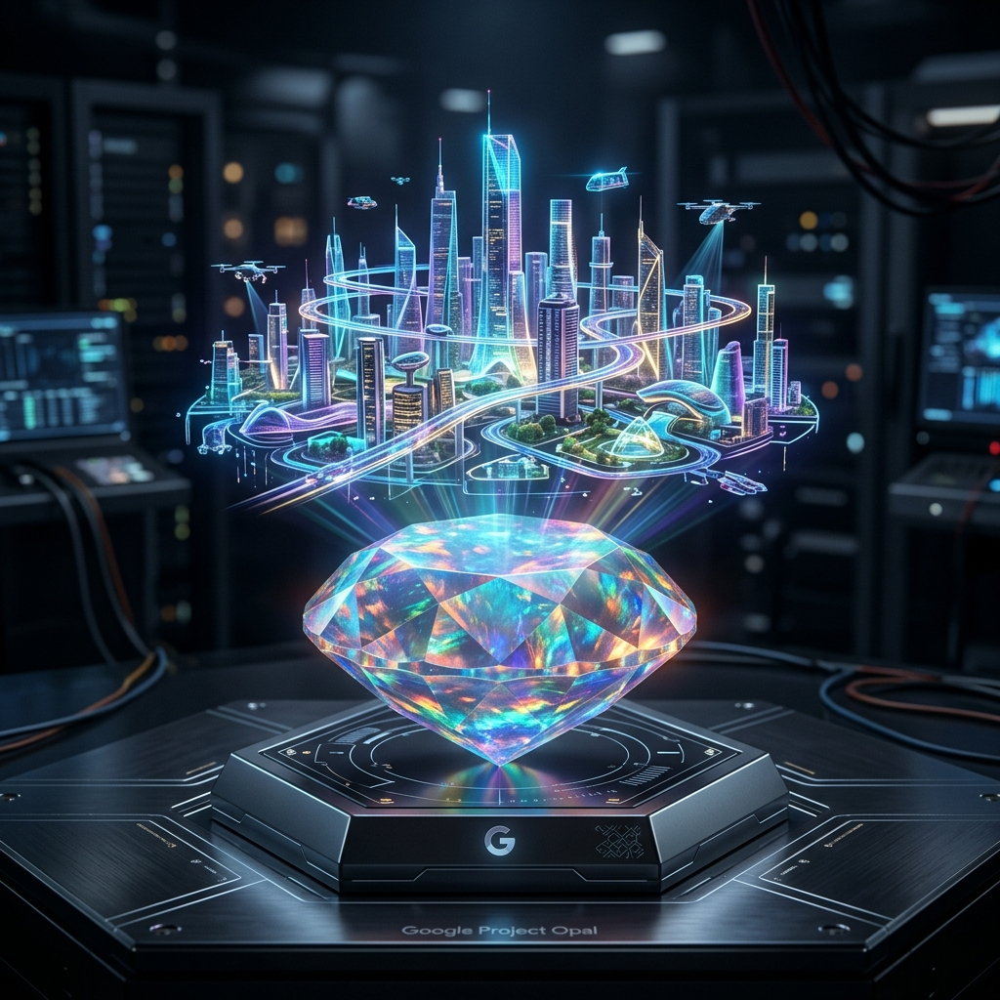

The Future of Visual Content: Why Project Opal is the New Standard for Brand Imagery

Visual storytelling is no longer a luxury; it’s a requirement. But for a small business, creating high-fidelity images and videos usually involves expensive equipment, lighting, and post-production. Project Opal, an experimental visual agent from Google, is designed to move that entire studio into the cloud. (Project Opal)
What is Project Opal?
Project Opal is a high-performance visual generation tool that focuses on cinematic quality and brand consistency. It allows you to generate images and video sequences that maintain a specific artistic style—perfect for brands that need a cohesive "look" across all their marketing channels.
Why This Matters for Your Business
Consistency is what separates "amateur" brands from "pro" brands. With Opal, we can help our clients build a custom "Visual Brand Guide" that the AI follows perfectly. Whether you need a product shot for a newsletter or a background for a keynote, Opal ensures it fits your brand’s DNA every single time.
Trending Tasks & Capabilities
- Cinematic Brand Sequences: Generating short, high-quality video loops for website headers.
- Consistent Character Generation: Creating a brand "mascot" or "persona" that looks the same in every single image.
- Advanced Lighting Control: Changing the "mood" of a scene (e.g., from "morning sun" to "midnight glow") without a reshoot.
- High-Resolution Upscaling: Taking basic concepts and turning them into 4K-ready assets for print or digital billboards.
The ROI: Production Value for a Fraction of the Cost
A professional commercial shoot can cost $10k–$50k. By using Project Opal as your "digital studio," you can achieve 90% of that value for a fraction of the time and cost. It’s the ultimate scaling tool for visual-heavy industries like real estate, fashion, and consumer goods.